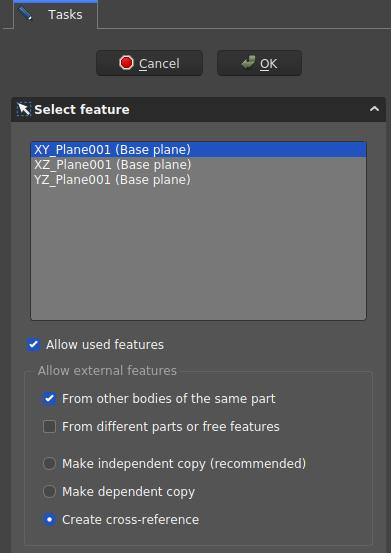

PartDesign NewSketch/pt-br
|
|
| Menu location |
|---|
| None |
| Workbenches |
| PartDesign |
| Default shortcut |
| None |
| Introduced in version |
| 0.17 |
| See also |
| Sketcher NewSketch |
Description
This tool creates a new sketch, creates a new PartDesign Body to contain the sketch if one does not exist and automatically opens the Sketcher workbench after creation.
When creating models using the PartDesign workbench, this tool should be preferred to the  Sketcher NewSketch tool found in the Sketcher workbench.
Sketcher NewSketch tool found in the Sketcher workbench.
Usage
- There are several ways to invoke the tool:
- Press the
 New Sketch button.
New Sketch button. - Select the Sketch → New Sketch option from the menu.
- Press the
- In the Tasks panel, the Select Attachment dialog is brought up. Select one of the planes in the list or in the 3D View which can be reoriented for better visibility.
- Press OK.
- The interface automatically switches to the Sketcher workbench and the sketch can be edited. Once the sketch is exited, the interface is brought back to the PartDesign workbench and the 3D View is restored to the view orientation prior to creating the sketch.
- Alternatively, a plane or a face on the existing active body can be selected before creating the sketch, in which case the sketch is instantly created.
Options
- To change the attachment of an existing sketch, change its Map Mode property (see Properties.)
- The Select Attachment Dialog defines the attachment of a new sketch

- Select Attachment dialog. These settings create a sketch on the XY-plane and allow cross-references from other items of the same body
{kind=link}
Dialog settings
- Coordinate system box: defines the orientation of the sketch plane
- Allow used features: TBD
- Allow External Features:
- From other bodies of the same part: any elements used in the same body can be referenced
- From different parts or free features:
- Make independent copy (recommended): all other elements will be separate copies, i.e. they will not change when the original changes.
- Make dependent copy: the elements will be copies, but a dependency to the original elements is kept. This is basically using a Shapebinder
- Create cross-reference: the linked elements will not be copies, but point to the original elements, e.g. a master sketch. Any changes are reflected to this sketch
To reference any items in the Workbench Sketcher use the  External Geometry and
External Geometry and  CarbonCopy tools. Generally it is recommended to use other sketches as source for references rather than faces or edges, because they are less affected by the Topological Naming Issue.
CarbonCopy tools. Generally it is recommended to use other sketches as source for references rather than faces or edges, because they are less affected by the Topological Naming Issue.
Properties
- DadosMap Mode: mode of attachment of the sketch to another object, usually a plane or a face but can be other types of objects. Click once in the field to reveal a … button and press it to open the Attachment dialog. If set to Deactivated, the Placement property is enabled.
- DadosPlacement: controls the orientation of the sketch in the 3D space; see placement. Disabled if the sketch is attached through the Map Mode property.
- Helper tools: New Body, New Sketch, Attach Sketch, Edit Sketch, Validate Sketch, Check Geometry, Sub-Shape Binder, Clone
- Modeling tools:
- Additive tools: Pad, Revolution, Additive Loft, Additive Pipe, Additive Helix, Additive Box, Additive Cylinder, Additive Sphere, Additive Cone, Additive Ellipsoid, Additive Torus, Additive Prism, Additive Wedge
- Subtractive tools: Pocket, Hole, Groove, Subtractive Loft, Subtractive Pipe, Subtractive Helix, Subtractive Box, Subtractive Cylinder, Subtractive Sphere, Subtractive Cone, Subtractive Ellipsoid, Subtractive Torus, Subtractive Prism, Subtractive Wedge
- Boolean: Boolean Operation
- Dress-up tools: Fillet, Chamfer, Draft, Thickness
- Transformation tools: Mirror, Linear Pattern, Polar Pattern, Multi-Transform, Scale
- Additional tools: Shape Binder, Involute Gear, Sprocket, Shaft Design Wizard
- Context menu: Suppressed, Set Tip, Move Object To…, Move Feature After…
- Preferences: Preferences, Fine tuning
- Getting started
- Installation: Download, Windows, Linux, Mac, Additional components, Docker, AppImage, Ubuntu Snap
- Basics: About FreeCAD, Interface, Mouse navigation, Selection methods, Object name, Preferences, Workbenches, Document structure, Properties, Help FreeCAD, Donate
- Help: Tutorials, Video tutorials
- Workbenches: Std Base, Assembly, BIM, CAM, Draft, FEM, Inspection, Material, Mesh, OpenSCAD, Part, PartDesign, Points, Reverse Engineering, Robot, Sketcher, Spreadsheet, Surface, TechDraw, Test Framework
- Hubs: User hub, Power users hub, Developer hub